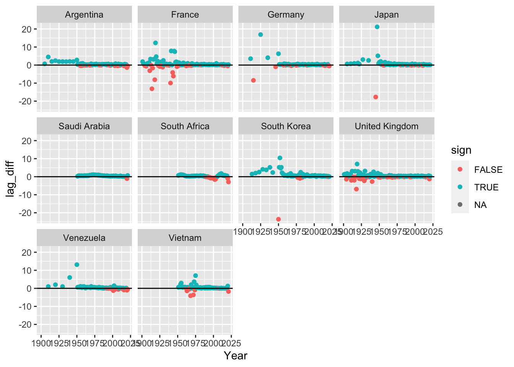
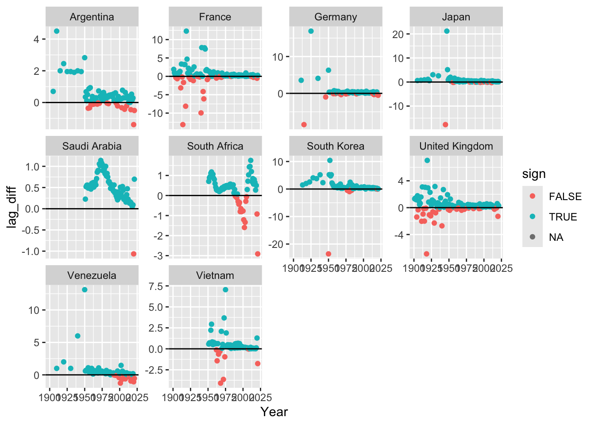
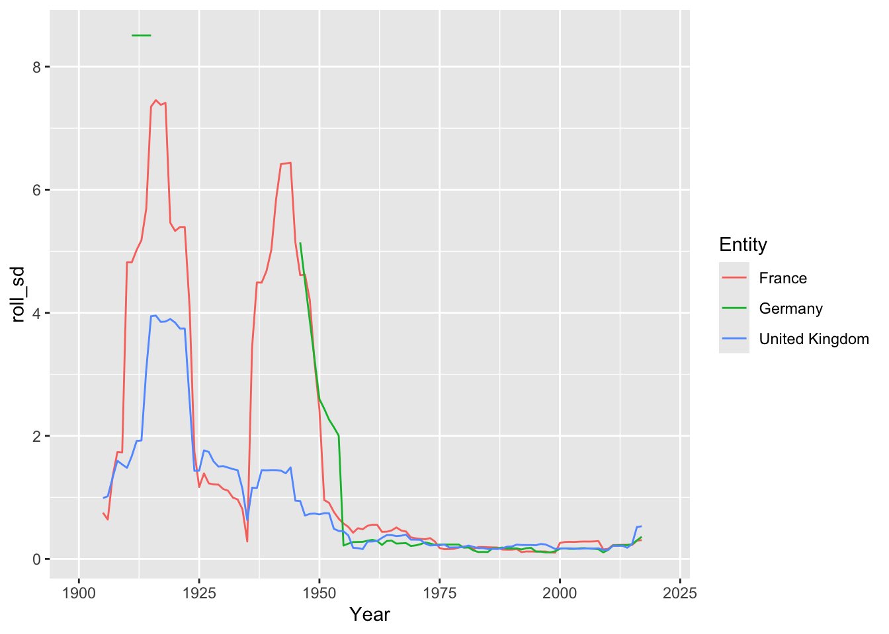

Code
library(tidyverse)
library(tidytuesdayR)In the previous week’s TidyTuesday session, we looked at Life Expectancy.
For this week, the Tidy Tuesday dataset of the week was of Christmas films. However, as public health folks we felt more interested in continuing to look at life expectancy, so continued with the previous week’s dataset.
This session was led by Andrew Saul.
Loading some packages
library(tidyverse)
library(tidytuesdayR)Use the tidytuesdayR package to load the data (rather than a direct link):
tuesdata <- tidytuesdayR::tt_load('2023-12-05')Populate the content of the list above into three separate datasets:
le <- tuesdata[[1]]
le_diff <- tuesdata[[2]]
le_gender <- tuesdata[[3]]Have a quick look at the data
glimpse(le)Rows: 20,755
Columns: 4
$ Entity <chr> "Afghanistan", "Afghanistan", "Afghanistan", "Afghanist…
$ Code <chr> "AFG", "AFG", "AFG", "AFG", "AFG", "AFG", "AFG", "AFG",…
$ Year <dbl> 1950, 1951, 1952, 1953, 1954, 1955, 1956, 1957, 1958, 1…
$ LifeExpectancy <dbl> 27.7275, 27.9634, 28.4456, 28.9304, 29.2258, 29.9206, 3…glimpse(le_diff)Rows: 20,755
Columns: 9
$ Entity <chr> "Afghanistan", "Afghanistan", "Afghanistan", "Afghani…
$ Code <chr> "AFG", "AFG", "AFG", "AFG", "AFG", "AFG", "AFG", "AFG…
$ Year <dbl> 1950, 1951, 1952, 1953, 1954, 1955, 1956, 1957, 1958,…
$ LifeExpectancy0 <dbl> 27.7275, 27.9634, 28.4456, 28.9304, 29.2258, 29.9206,…
$ LifeExpectancy10 <dbl> 49.1459, 49.2941, 49.5822, 49.8634, 49.9306, 50.4315,…
$ LifeExpectancy25 <dbl> 54.4422, 54.5644, 54.7998, 55.0286, 55.1165, 55.4902,…
$ LifeExpectancy45 <dbl> 63.4225, 63.5006, 63.6476, 63.7889, 63.8481, 64.0732,…
$ LifeExpectancy65 <dbl> 73.4901, 73.5289, 73.6018, 73.6706, 73.7041, 73.8087,…
$ LifeExpectancy80 <dbl> 83.7259, 83.7448, 83.7796, 83.8118, 83.8334, 83.8760,…glimpse(le_gender)Rows: 19,922
Columns: 4
$ Entity <chr> "Afghanistan", "Afghanistan", "Afghanistan", "Afg…
$ Code <chr> "AFG", "AFG", "AFG", "AFG", "AFG", "AFG", "AFG", …
$ Year <dbl> 1950, 1951, 1952, 1953, 1954, 1955, 1956, 1957, 1…
$ LifeExpectancyDiffFM <dbl> 1.261900, 1.270601, 1.288300, 1.306601, 1.276501,…There are fields code and entity, where entity tends to be more verbose/descriptive. Entities include geographic regions, countries, economic groupings etc. (So fairly messy, definitely not mutally exclusive and exhaustive)
le_diff %>%
count(Entity) %>%
pull(Entity)We decided to look at a series of countries from across the world.
countries <- c("Germany", "United Kingdom", "Saudi Arabia", "South Africa",
"South Korea", "Japan", "Vietnam", "Argentina", "Venezuela", "France")Today we looked at life expectency in a selection of countries from 1900
le1900 <- le %>%
filter(Entity %in% countries,
Year>=1900)
le1900 %>%
ggplot(aes(x=Year, y=LifeExpectancy))+
geom_line()+
facet_wrap(vars(Entity))
We then looked at the change in life expectency per year
le1900 %>%
group_by(Entity) %>%
mutate(lag_diff = LifeExpectancy - lag(LifeExpectancy, order_by = Year),
sign = lag_diff>0) %>%
ggplot(aes(x=Year, y=lag_diff))+
geom_point(aes(colour = sign))+
geom_hline(yintercept = 0)+
facet_wrap(vars(Entity))
We changed the axis magnification of each country, so that the changes were more readily observable
le1900lag <- le1900 %>%
group_by(Entity) %>%
mutate(lag_diff = LifeExpectancy - lag(LifeExpectancy, order_by = Year),
sign = lag_diff>0)
le1900lag %>%
ggplot(aes(x=Year, y=lag_diff))+
geom_point(aes(colour = sign))+
geom_hline(yintercept = 0)+
facet_wrap(vars(Entity), scales = "free_y")
Finally, we examined variability in the change of life expectency altered for UK, France and Germany. Here is can be seen that variability in life expectancy dramatically increased around the First and Second World Wars. Data for Germany was incomplete for this period.
To do this we made use of the slider package, and within this the slide_index function, to produce a rolling standard deviation of annual changes.
library(slider)
le1900lag %>%
arrange(Year) %>%
filter(Entity %in% c("United Kingdom", "France", "Germany")) %>%
mutate(roll_sd = slide_index_dbl(lag_diff, Year, .before = 4, .after = 4, .f = sd, .complete = T)) %>%
ggplot(aes(x=Year, y=roll_sd, color = Entity))+
geom_line()